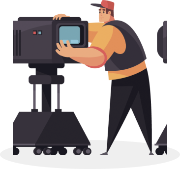

О курсе
Порой фильмы устроены сложнее четырёхтомных романов. Но читать книги учат со школы, а смотреть кино — нет. При этом без подготовки бывает трудно получить от просмотра удовольствие. На курсе из 8 занятий научимся быть осознанными зрителями. Познакомимся
с этапами кинопроизводства и узнаем, как смотреть кино глазами сценариста, режиссёра и монтажёра. Разберёмся в особенностях жанров и рассмотрим важнейшие картины, от «Гражданина Кейна» до «Матрицы».
